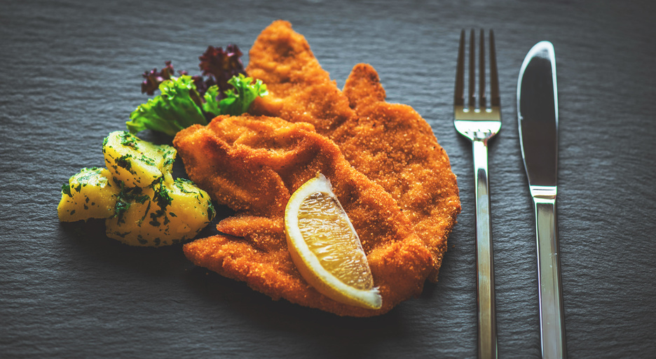

Wiener Schnitzel


45 Min.

Medium

05.12.2025
Zutaten für
| 4 Kalbschnitzel (aus der Oberschale) |
| 2 Eier |
| 150 g Semmelbrösel |
| 50 g Mehl |
| 2 EL Butterschmalz |
| 1 kg Kartoffeln |
| Bund Petersilie |
| Salz (je nach Belieben) |
| Pfeffer (je nach Belieben) |
Zubereitung
ca. 30 Minuten
Gesamtzeit ca. 45 Minuten